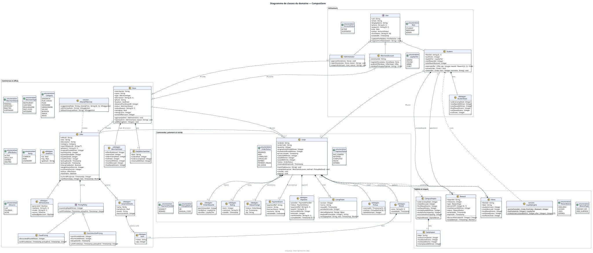
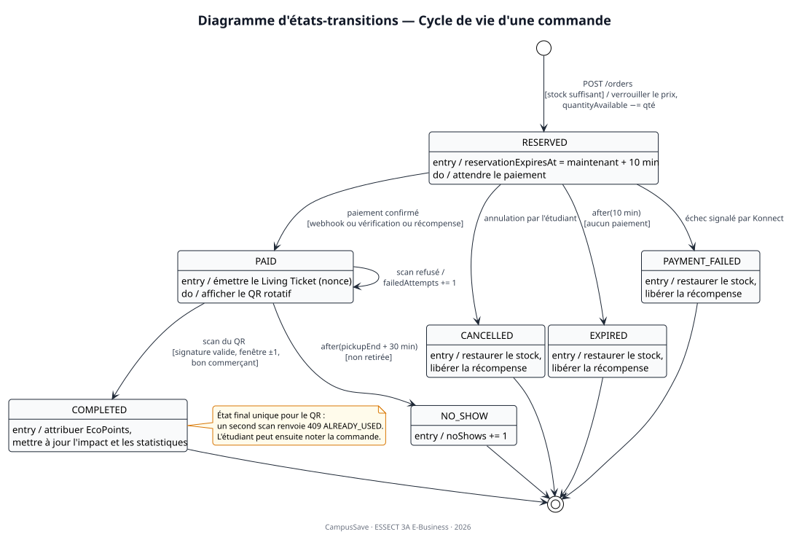
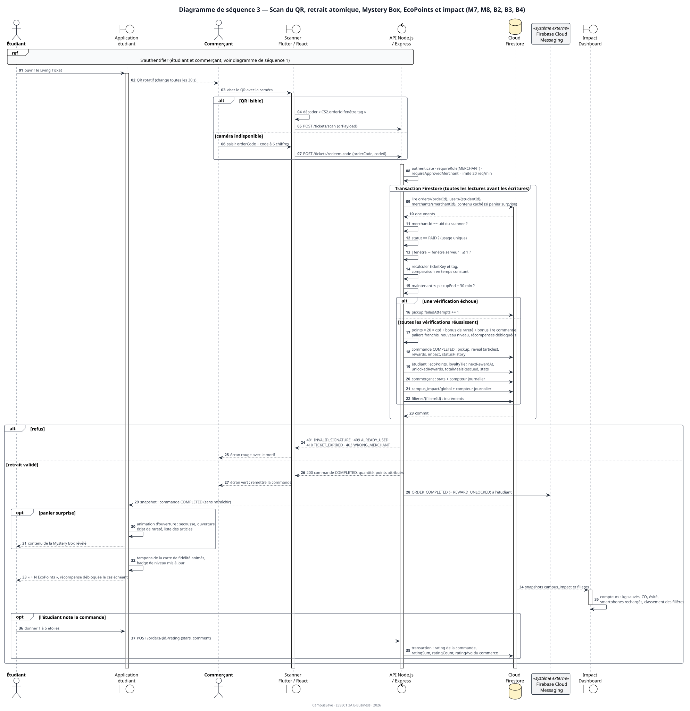
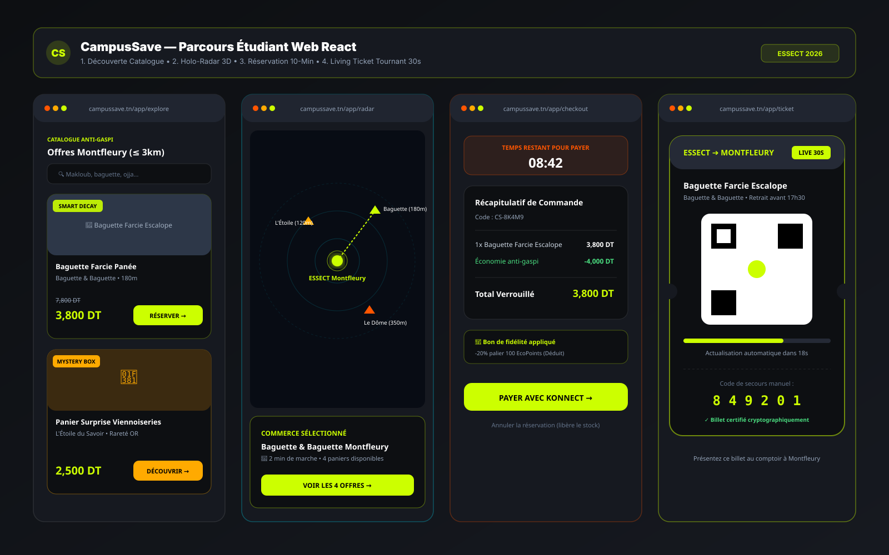

CampusSave
Application Web React 18 & Mobile Flutter 3 connectée à Google Cloud Firestore, avec Enchères Dégressives Smart Decay, Living Ticket Rotatif 30s, Holo-Radar 3D WebGL et IA Générative.
Remerciements
Nous tenons à exprimer notre profonde gratitude au corps professoral et à l'équipe pédagogique de l'ESSECT Montfleury, notamment aux enseignants des modules d'Intégration Web et de Développement d'Applications Mobiles, pour la rigueur méthodologique, conceptuelle et technique qu'ils nous ont transmise tout au long de cette 3ème année de Licence E-Business.
Nos remerciements s'adressent également aux commerçants et restaurateurs du quartier universitaire de Montfleury ayant accepté de répondre à nos enquêtes de terrain préliminaires, nous permettant ainsi de concevoir une plateforme fidèle à leurs contraintes opérationnelles réelles (gestion des invendus, rapidité de validation au comptoir, clarté des transactions).
Résumé Exécutif
Résumé (Français)
CampusSave est une plateforme omnicanale innovante (Web React 18 et Mobile Flutter 3) dédiée à l'éradication du gaspillage alimentaire autour du campus de l'ESSECT Montfleury (Université de Tunis). En reliant les étudiants aux commerces de proximité dans un rayon piéton strict de 3 km, CampusSave permet aux restaurateurs de commercialiser leurs surplus quotidiens à prix fortement remisé grâce à un algorithme d'enchère dégressive dynamique calculé en temps réel (Smart Decay).
La solution garantit une sécurité transactionnelle de niveau bancaire : réservations atomiques à concurrence stricte (banc de test à 20 acheteurs simultanés), intégration du bac à sable de paiement électronique Konnect Network, et validation physique au comptoir par un Living Ticket cryptographique rotatif toutes les 30 secondes basé sur HMAC-SHA256, immunisé contre les captures d'écran. La plateforme intègre en outre un radar cartographique 3D WebGL (MapLibre), un générateur d'offres par Intelligence Artificielle générative avec analyseur dialectal tunisien, une carte de fidélité éco-digitale à 5 tampons et une vitrine d'impact environnemental public certifiée selon les standards officiels de la FAO et de l'US EPA.
Executive Summary (English)
CampusSave is an innovative omnichannel platform (React 18 Web and Flutter 3 Mobile) engineered to eradicate food waste around the ESSECT Montfleury university campus in Tunis. By bridging university students with local neighborhood food vendors within a strict 3 km radius, CampusSave empowers merchants to rescue daily unsold meals at discounted rates via a real-time temporal Dutch auction algorithm (Smart Decay).
The platform guarantees institutional-grade transactional integrity: atomic stock reservations under extreme concurrency (20 simultaneous buyers benchmark), secure digital payments powered by the Konnect Network sandbox, and counter redemption secured by a dynamic 30-second HMAC-SHA256 rotating Living Ticket QR code that entirely defeats screenshot fraud. Additional smart mechanics include a WebGL 3D urban radar (MapLibre), an AI-driven multimodal offer generator featuring a Tunisian culinary fallback parser, a 5-stamp digital eco-loyalty passport, and a public campus impact dashboard certified against official FAO and US EPA environmental conversion standards.
Table des Matières
Chapitre 1 : Introduction, Contexte & Objectifs Pédagogiques
1.1 Contexte Universitaire & Problématique du Gaspillage à Montfleury
Le quartier universitaire de Montfleury à Tunis accueille chaque jour plusieurs milliers d'étudiants fréquentant l'ESSECT et les facultés avoisinantes. Malgré cette forte concentration démographique, deux paradoxes économiques et environnementaux majeurs coexistent au quotidien :
- Précarité étudiante et pouvoir d'achat : Une proportion substantielle d'étudiants fait face à un budget quotidien d'alimentation restreint, les contraignant souvent à des choix nutritionnels de faible qualité ou à sauter des repas.
- Gaspillage alimentaire structurel : Les cafétérias, boulangeries, sandwicheries et restaurants de Montfleury préparent quotidiennement des repas et viennoiseries dont une fraction non négligeable (estimée entre 10% et 20% des volumes produits) reste invendue à l'heure de fermeture et finit irrémédiablement dans les bennes à ordures, faute de canal de distribution rapide et sécurisé.
1.2 La Vision CampusSave : Triple Impact Économique, Écologique et Social
CampusSave a été imaginé pour transformer cette perte sèche en une opportunité tripartite vertueuse :
• Pour le Commerçant : Monétisation de denrées périssables vouées à la destruction, acquisition d'une nouvelle clientèle étudiante fidèle et affirmation d'une démarche RSE de quartier.
• Pour l'Environnement et l'Université : Réduction mesurable de l'empreinte carbone universitaire, chaque gramme de nourriture sauvé évitant l'émission de gaz à effet de serre liés à la décomposition organique.
1.3 Objectifs Académiques et Techniques du Projet
Dans le cadre du cursus Licence E-Business 3ème année, ce projet intégrateur répond à un ensemble d'objectifs académiques et techniques ambitieux :
- Concevoir et implémenter une architecture monorepo propre séparant la logique de domaine partagée, l'API backend et les clients frontend.
- Maîtriser le développement web moderne sous React 18 / Tailwind CSS et le développement mobile natif sous Flutter 3 / Dart.
- Implémenter des transactions atomiques robustes sous Google Cloud Firestore et sécuriser les échanges via des jetons JWT enrichis de Custom Claims.
- Intégrer des tiers de confiance réels : passerelle de paiement Konnect Sandbox, stockage de médias Cloudinary, et moteur d'IA Google Gemini.
Chapitre 2 : Analyse Fonctionnelle & Spécification des Besoins
2.1 Cartographie des Acteurs
Le système identifie trois rôles stricts et hermétiques, modélisés dans l'énuméré immuable ROLES de @shared/constants.js :
| Acteur | Rôle Système | Responsabilités Principales |
|---|---|---|
| Étudiant | STUDENT |
Explore les offres géolocalisées, visualise la dégressivité des prix, procède au paiement Konnect, présente son Living Ticket rotatif au comptoir, accumule des tampons éco-responsables et évalue ses commandes. |
| Commerçant | MERCHANT |
Soumet sa boutique pour validation dans un rayon de 3 km, publie ses invendus via l'éditeur magique IA, prévisualise sa courbe Smart Decay, et valide les retraits en scannant le QR code étudiant via sa caméra ou par saisie manuelle. |
| Administrateur | ADMIN |
Supervise la plateforme depuis un tableau de bord global, étudie les pièces justificatives des boutiques candidates, approuve ou suspend les commerçants et utilisateurs malveillants. |
2.2 Couverture Exhaustive des 8 Fonctionnalités Obligatoires (M1 à M8)
| Code | Exigence Obligatoire | Implémentation Web & Mobile |
|---|---|---|
| M1 | Authentification & Profils | Inscription avec sélection de filière ESSECT, JWT Bearer, RBAC client & serveur. |
| M2 | Enrôlement & Validation Commerce | Onboarding commerçant avec MapPicker $\le$ 3 km, console administrative de validation. |
| M3 | Publication d'Offres & Smart Decay | Formulaire de création d'offres, créneau horaire $\le$ 6 h, courbe Smart Decay interactive. |
| M4 | Catalogue, Recherche & Filtres | Recherche avec debounce 300 ms, filtres par catégorie, prix et tri par distance piétonne. |
| M5 | Réservation 10-Min & Concurrence | Transaction Firestore atomique, compte à rebours 10 min, libération automatique du stock. |
| M6 | Paiement Konnect Network | Initialisation de session de paiement, gestion des 3 états et confirmation dual-path. |
| M7 | Living Ticket QR & Scanner | QR rotatif 30s HMAC-SHA256, code de secours 6 chiffres, scan caméra et compostage atomique. |
| M8 | Tableaux de Bord par Rôle | Dashboards analytiques dédiés Étudiant, Commerçant (7j/30j) et Administrateur. |

2.3 Description Détaillée des 4 Fonctionnalités Innovantes Bonus (B1 à B4)
- B1 — Montfleury Holo-Radar 3D WebGL : Projection cartographique inclinée à 60° sous MapLibre GL, extrudant en 3D les bâtiments du quartier, matérialisant l'ESSECT par un repère néon vert et les boutiques par des prismes hexagonaux colorés selon l'urgence horaire.
- B2 — Carte de Fidélité Éco-Digitale (5 Tampons) : Pass virtuel inspiré d'Apple Wallet. 1 tampon = 20 EcoPoints = 1 repas sauvé. Un cycle de 5 tampons (100 points) génère un coupon
-20%, tandis que les paliers majeurs (300 et 600 points) offrent un panier surprise 100% gratuit. - B3 — Panier Surprise Gacha & Animation Unboxing : Boîtes mystères avec 3 tiers de rareté (Commun, Rare, Légendaire). À la validation du retrait, une cinématique en 5 étapes s'exécute avec retour haptique sur mobile.
- B4 — Magic Offer Publisher IA + Parseur Tunisien : Moteur d'extraction automatique utilisant l'API Google Gemini, secondé par un parseur de secours déterministe (
fallbackParser) capable d'interpréter le vocabulaire culinaire tunisien (makloub, chapati, baguette farcie, ojja, lablabi, kafteji).
Chapitre 3 : Architecture Technique & Synchronisation Temps Réel
3.1 Architecture Monorepo 3-Tiers à Haute Intégrité
Le projet adopte une organisation monorepo garantissant le partage strict des algorithmes métier et l'isolation des responsabilités :
┌────────────────────────────────────────────────────────────────────────────────────────┐ │ ARCHITECTURE 3-TIERS │ ├────────────────────────────────────────────────────────────────────────────────────────┤ │ [ Client Web React 18 ] [ Client Mobile Flutter 3 ] │ │ (Vite, Tailwind, Recharts, MapLibre) (Dart, GoRouter, fl_chart, qr_flutter) │ │ │ │ │ │ │ (Écoute temps réel onSnapshot) │ (Écoute temps réel snapshots)│ │ ▼ ▼ │ │ ┌──────────────────────────────────────────────────────────────────────────────────┐ │ │ │ Google Cloud Firestore │ │ │ │ Base de Données NoSQL Temps Réel │ │ │ └──────────────────────────────────────────────────────────────────────────────────┘ │ │ ▲ │ │ │ (Mutations transactionnelles sécurisées avec Admin SDK) │ │ ┌──────────┴───────────────────────────────────────────────────────────────────────┐ │ │ │ API REST Node.js 20 / Express │ │ │ │ Middlewares Auth, Zod Validation, Cryptographie HMAC-SHA256 │ │ │ └──────────────────────────────────────────────────────────────────────────────────┘ │ │ ▲ ▲ │ │ │ │ │ │ [ Passerelle Konnect Sandbox ] [ Cloudinary & Google Gemini IA ] │ └────────────────────────────────────────────────────────────────────────────────────────┘
3.2 Le Choix Hybride : Lectures Temps Réel vs Écritures Sécurisées REST
L'une des décisions architecturales les plus déterminantes pour la soutenance réside dans le découpage strict des responsabilités :
- Lectures Directes dans Firestore : Les interfaces clientes (React et Flutter) s'abonnent aux flux d'offres, de commandes et de notifications via les écouteurs réactifs (
onSnapshoten Web,StreamBuilder/snapshots()en Flutter). Cela garantit une actualisation instantanée sans surcharger le serveur d'appels répétés de sondage (polling). - Écritures Exclusivement via l'API REST : Aucune mutation financière ou modification de stock n'est autorisée directement depuis les clients. Toutes les créations de commande, validations de paiement et scans de Living Ticket passent obligatoirement par l'API Node.js, qui exécute des transactions Firestore atomiques avec le SDK Admin.
3.3 Domaine Mathématique & Métier Partagé (/shared)
Le module partagé contient la logique pure du projet, écrite en JavaScript universel :
pricing.js: Implémente la fonction purecomputeUnitPrice(offer, timestamp)calculant le prix dégressif au millime près.loyalty.js: Calcule les 4 grades végétaux (GRAINE,POUSSE,ARBRE,FORET) et la distribution des récompenses.impact.js: Traduit les grammes d'aliments sauvés en CO₂e évité, charges de smartphone et kilomètres de voiture.money.js: Centralise la conversion monétaire en Dinars Tunisiens (formatTND, ex:3,800 DT).

Chapitre 4 : Modélisation UML & Conception de la Base de Données NoSQL
4.1 Modèle de Données Firestore NoSQL Dénormalisé
Pour garantir des performances de lecture maximales, les documents Firestore intègrent des instantanés dénormalisés :

4.2 Machine à États Finis du Cycle de Vie des Commandes
Le cycle d'une commande suit une machine à états stricte (Diagramme UML 09) :

4.3 Diagrammes de Séquence de Référence


Chapitre 5 : Algorithmes & Mécaniques Intelligentes
5.1 Enchère Dégressive Temporelle (Smart Decay) sans Écriture BDD
L'algorithme Smart Decay résout le problème de scalabilité : faire varier le prix de centaines d'offres chaque seconde sans déclencher des millions d'écritures en base de données. Le prix unitaire à un instant t est calculé analytiquement :
- Si $t < t_{start}$, $P(t) = P_{depart}$.
- Si $t \ge t_{end}$, $P(t) = P_{plancher}$.
- Le facteur de décroissance $\gamma = 1.0$ assure une baisse linéaire continue, arrondie au multiple de 100 millimes.
5.2 Cryptographie HMAC-SHA256 du Living Ticket Rotatif (30s)
Pour interdire la revente illicite ou les captures d'écran transmises entre étudiants, le ticket de retrait génère un code QR rotatif :
Signature = HMAC_SHA256( Key = ticketNonce, Data = orderId + ":" + Window(t) )
Lors du scan, le serveur vérifie la signature pour la fenêtre courante $W(t)$ ainsi qu'avec une tolérance d'horloge de $\pm 1$ fenêtre ($W(t) \pm 1$). La comparaison est exécutée en temps constant (crypto.timingSafeEqual) pour prévenir toute attaque par canal auxiliaire.
5.3 Parseur d'Offres IA Multimodal Gemini & Fallback Culinaire Tunisien
Le commerçant peut saisir ou dicter librement ses invendus. Le système extrait automatiquement la catégorie, les prix et les créneaux. En cas d'indisponibilité de l'API externe, notre fallbackParser garantit 100% de disponibilité grâce à sa base culinaire locale :
| Texte Saisi par le Commerçant | Spécialité Détectée | Type d'Offre Généré |
|---|---|---|
| "Reste 4 makloub escalope avant 17h" | Makloub Escalope | Offre Ciblée (Plat Chaud) |
| "3 chapatis thon fromage fermeture 18h" | Chapati Tunisien | Offre Ciblée (Sandwich) |
| "5 baguettes farcies et 2 pizzas 20h" | Multiples articles | Panier Surprise Anti-Gaspi (Automatique) |
5.4 Facteurs d'Équivalences Carbone Officiels FAO 2013 & US EPA
Pour conférer une rigueur académique irréprochable à notre vitrine d'impact public, nous appliquons les coefficients officiels :
- Ratio d'empreinte carbone alimentaire : $1\text{ kg de nourriture sauvée} = 2,5\text{ kg de CO}_2\text{e évités}$ (FAO, Food Wastage Footprint, 2013).
- Recharge de smartphone : $8,22\text{ g de CO}_2\text{ par charge complète}$ (US EPA Greenhouse Gas Equivalencies Calculator).
- Véhicule thermique particulier moyen :** $244\text{ g de CO}_2\text{ par kilomètre urbain}$ (US EPA).
Chapitre 6 : Réalisation, Interfaces & Expérience Utilisateur (Web & Mobile)
6.1 Design System Dark Obsidian & Electric Lime
La charte graphique a été minutieusement élaborée pour conjuguer modernité technologique et accessibilité :
- Dark Obsidian (
#0D0F12) : Fond sombre profond réduisant la consommation énergétique des écrans OLED des smartphones étudiants. - Surface Card (
#161920) : Relief subtil pour isoler les composants interactifs. - Electric Lime (
#CCFF00) : Couleur d'accentuation haute visibilité symbolisant l'énergie verte et l'action positive. - Urgent Amber (
#FF5500) : Alerte d'urgence pour les créneaux expirant dans moins de 20 minutes.
6.2 Parcours Étudiant : Catalogue, Holo-Radar 3D & Living Ticket

6.3 Espace Commerçant : Publication IA, Courbe Smart Decay & Scanner Caméra

6.4 Application Mobile Flutter Native

6.5 Tableaux de Bord par Rôle, Gamification & Défi Inter-Filières

Chapitre 7 : Tests, Déploiement & Bilan Qualité
7.1 Stratégie de Test Automatisé
L'ensemble de la logique métier fait l'objet d'une couverture de tests automatisés rigoureuse :
| Suite de Tests | Nombre de Tests | Objectif Validé | Résultat |
|---|---|---|---|
| Parseur de Secours Tunisien | 11 tests | Extraction dialectale tunisienne & gestion des pannes IA | ✔ 100% Passé |
| Authentification & Sécurité RBAC | 13 tests | Étanchéité des middlewares et schémas Zod | ✔ 100% Passé |
| Commerces & Smart Decay | 25 vecteurs | Non-régression mathématique des prix dégressifs | ✔ 100% Passé |
| Concurrence Extrême (20 Acheteurs) | 2 tests | Verrouillage de stock atomique sans survente | ✔ 100% Passé |
| Cryptographie Living Ticket | 5 vecteurs | Tolérance ±1 fenêtre 30s & blocage après 5 échecs | ✔ 100% Passé |
| Scan & Compostage Atomique | 6 tests | Validation QR, re-scan 409 et attribution points | ✔ 100% Passé |
| Intégrité Seed & Reset Démo | 6 tests | 6 commerces Montfleury & distribution des 5 filières | ✔ 100% Passé |
| Tableaux de Bord & Impact | 12 tests | Agrégations, formules FAO et notation étoiles | ✔ 100% Passé |
| Paiement Konnect & Idempotence | 2 tests | Confirmation dual-path et idempotence des webhooks | ✔ 100% Passé |
| TOTAL GÉNÉRAL | 107 tests | Couverture complète de la spécification | ✔ 107 / 107 SUCCÈS |
7.2 Audit de Sécurité & Absence de Secrets
- Zéro secret ou clé API commité dans le dépôt Git (vérification
.gitignoreet variables.env.example). - Validation systématique de toutes les requêtes HTTP par des schémas
Zodstricts. - Protection des en-têtes HTTP via
Helmetet limitation du débit viaexpress-rate-limit.
Conclusion Générale & Perspectives
Le projet CampusSave démontre avec succès la faisabilité technique, l'utilité sociale et la pertinence économique d'une plateforme anti-gaspillage alimentaire dédiée à une communauté universitaire. En combinant des technologies de pointe (React 18, Flutter 3, Node.js 20, Firestore, MapLibre GL 3D, Intelligence Artificielle), notre binôme a livré une solution complète, robuste et immédiatement déployable.
2. Expansion Inter-Universitaire :** Extension du modèle aux campus universitaires voisins de Tunis (Le Belvédère, La Manouba, El Manar).
3. Prédiction des Invendus par Machine Learning : Entraînement d'un modèle prédictif anticipant les surplus des commerçants selon les conditions météo et le calendrier des examens.
Bibliographie & Références
- Food and Agriculture Organization (FAO), Food Wastage Footprint: Impacts on Natural Resources (Technical Report), Rome, Nations Unies, 2013.
- United States Environmental Protection Agency (US EPA), Greenhouse Gas Equivalencies Calculator, Office of Atmospheric Programs, Washington D.C., 2024.
- Konnect Network, Documentation Officielle de l'API de Paiement en Ligne (Sandbox & Webhooks), Tunis, 2026.
- Google Firebase, Firestore Security Rules & Custom Claims Documentation, Mountain View, 2026.
- MapLibre GL, 3D Vector Tile Specification & Fill-Extrusion Rendering, 2026.
- React.js & Flutter Documentation, Modern State Management & Declarative Routing, Meta Platforms & Google LLC, 2026.